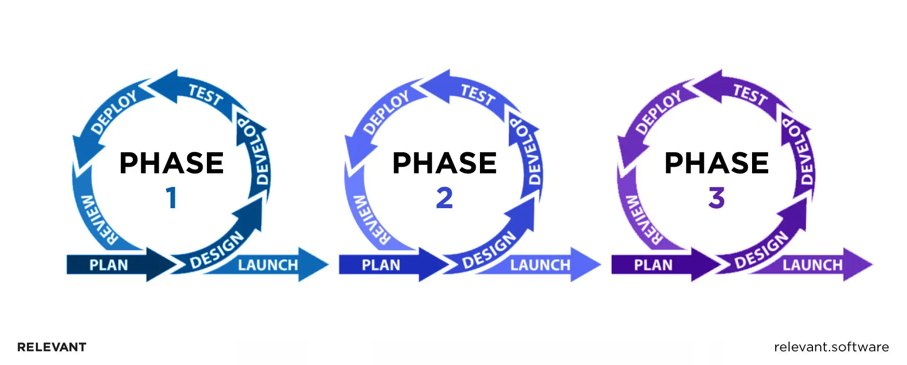
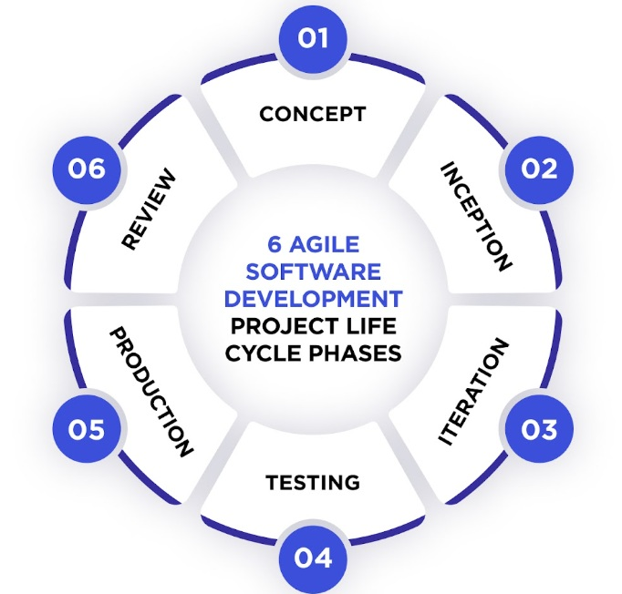

Agiilne arendusmudelid on paindlikud mudelid, mis eelistavad iteratiiset ja kohandatavat tarkvaraarendust, klientide kaasamist ja meeskonnatöö. Nende meetodide eesmärk on toota töötavat tarkvara väikestest inkrementides, kaasates tagasisidet ning tehes muudatusi vastavalt vajadustele.
Tarkvara arendus käib ümber iteratiivse ja ajaliselt piiratud tsüklite, mida kutsutakse sprindiks. See kestab tavaliselt kaks nädalat, iga tsükkel keskendub „kasutajalugude” või funktsioonide kogumile, mida meeskond suudab etteantud ajaraamis ära toimetada.

Agiilsel tarkvara arenduse elutsükkel koosneb kuuest etapist: Kontseptsioon, Algus, Iteratsioon, Testimine, Avaldamine ja Ülevaatus.

Viited infole: